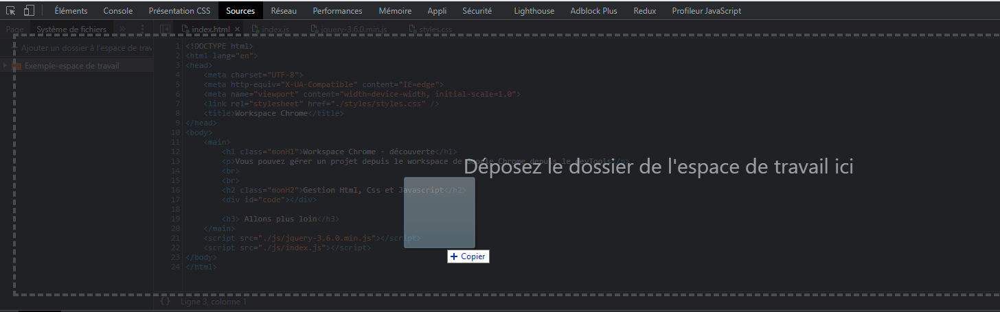

Workspace et devTools Chrome - découverte
Vous pouvez gérer un projet depuis le workspace de Google Chrome et ce, via le devTools
Avant tout chose, si vous souhaitez accèder au projet de cette formation, vous pouvez le faire ici. Une fois déposé, vous avez accès à votre dossier de travail et vous pouvez soit :
- Ouvrir votre fihcier HTML principal depuis votre dossier physique (disque dur)
- Utiliser une extension chrome comme Web Server for Chrome
Nous allons utiliser le second choix afin d'avoir un accès plus intuitif à notre projet.
Une fois dans votre projet, il est tout à fait possible d'éditer vos fichiers JavaScript, CSS et HTML tout en visionnant vos modifications depuis le navigateur. Vous devrez simplement sauvegarder vos fichiers et actualiser devTools avec F5.
Voici par exemple un simple bouton qui possède un design intégré depuis une feuille de style distante ainsi que des fonctionnalités js
Afin d'ajouter un cadre d'apprentissage, nous allons étudier l'utilisation des shadow DOM components au sein de ce cours
Mais qu'est-ce qu'un shadow DOM Component (ou api Shadow DOM) ?
Un aspect important des composants web est l'encapsulation — être capable de garder la structure de balisage, le style et le comportement cachés et séparés du reste de code de la page tel que différentes parties n'entrent pas en conflit et que le code puisse rester agréable et propre. L'API Shadow DOM est un moyen d'y parvenir, fournissant une manière d'associer à un élément un DOM séparé et caché. Un bon exemple pourrait être le bouton "follow me" de Twitter qui embarque un composant qui est isolé du DOM principal et qui ne prend donc aucun style et intreraction de son DOM parent, d'ailleurs sans DOM parent il ne peut y avoir de DOM shadow, celui-ci utilise ce premier afin de s'y incorporer.Nous allons créer notre premier Shadow DOM Component, celui-ci restera basique et aura simplment un but pédagogique.
Ce composant est construit à partir du fichier ShadowComponent.js et il possède des propriétés bien définis :
- Le composant est élément qui étend HTMLElement
- Il possède bien évidement un constructeur qui lui permettra par la suite de pouvoir l'utiliser via son propre scope, en l'occurence "this._root"
- Il possède aussi une méthode d'attachement qui prend deux paramètres possible : "this.attachShadow" pouvant être ouvert (open), ce qui lui permettra de créer un pont avec le DOM qui l'accueil en son sein et fermer (closed), qui lui permet d'être isolé du DOM parent.
- Il a donc la capacité a être isolé et de ne pas subir le comportement (styles CSS et script js) utilisé depuis le DOM parent
Notre premier composant est un simple "DOM Shadow component", il possède son propre modèle composé de : CSS et HTML et Javascript. Le second reprend le composant "star" de github généré depuis https://buttons.github.io/. Le troisème est un peu plus complexe et permet d'afficher du contenu en fonction du token entré dans le text input